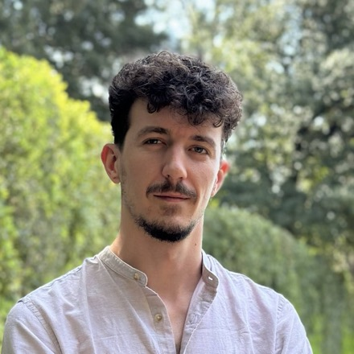

Erald Haklaj
Full-Stack Engineer, leading from the front end
Download PDF
Summary
Full-Stack Engineer with 8+ years of experience, most of it leading from the front end. I build web products end to end, from the first product conversation through to something shipped and polished, and I usually reach for the simpler solution before the bigger one. My work has run in production for brands like L'Oréal, the NFL, and some of Europe's best-known fashion labels. When something breaks, I take ownership of it, and I see the last 10% through.
Core Skills
Front end: React, Next.js, EmberJS, Vite, Redux, Three.js, PReact, JavaScript/TypeScript, SCSS, Bootstrap, HTML
Back end: Node.js, Ruby on Rails, Java (Spring), PHP, REST APIs, JWT auth, payment integrations
Data: PostgreSQL, MySQL, PL/SQL, relational schema design
Ways of working: owning features end to end, product and UX judgment, large refactors, performance profiling, A/B testing and feature flags, agile teams and release rotations, code review and mentoring
Experience
| Toffee AI · Full-Stack Developer (freelance) |
Sep 2025 to Present |
A consumer character-AI chat platform (React, Next.js, React Query). Remote.
- Built the character-creation feature end to end from just mock designs, owning the UX, the edge cases, and the architecture. It included a searchable tag field (debounced and cached, with infinite scroll over a paginated API), a four-step AI image-generation flow, progress that survives a page refresh, a report and moderation flow, public/unlisted/private characters, and a gradual A/B rollout with Flagsmith. About two months of work.
- Brought the page load down from around three seconds to about one and a half. Part of that was an image pipeline that pre-generates full and medium sizes so the app sends smaller images first; part was cutting a heavy component from roughly 300 re-renders on load to about 10.
- Worked across the stack, including back-end pull requests for character and chat sharing and for chat image and video generation, plus a public, slimmed-down endpoint that helped both SEO and first load.
- Made release calls (ship or hold) on my own when they were needed.
| SAIZ GmbH · Front-End Team Lead (freelance to full-time) |
Sep 2024 to Oct 2025 |
An AI size-recommendation widget for fashion, live on s.Oliver, Marc O'Polo, and Jack Wolfskin. Berlin (remote).
- Led a three-person front-end team, covering technical direction, code review, and the groundwork the rest built on.
- Rebuilt the widget so every brand could run its own version: its own fonts, colors, component choices, number of steps, and placement, all from a single brand config and dropped in with one HTML selector (React, Vite, Redux).
- Taught myself Three.js and Blender to build interactive 3D body avatars, instead of an image-swapping idea that would have been slow and heavy. Later tracked down and fixed a memory leak that was pushing the browser past 2 GB.
- Rebuilt the analytics platform in Next.js with dynamic tables and returns charts, worked out a smoother transition animation with the CEO, and grew the engine into two more products (Size Nudge and Size Chart) plus an AI body-measurement simulator.
| Ritech Solutions · Software Engineer, on Jebbit / BlueConic |
May 2021 to Nov 2024 |
A first-party data platform (surveys, quizzes, lead forms) used by L'Oréal, AutoZone, and the NFL, peaking at around a million sessions an hour. Tirana, Albania.
- Worked full-stack across three codebases (the platform, the renderer, and the embeddable widget) in EmberJS, Ruby on Rails, Node.js, PostgreSQL, and vanilla JS.
- Owned features from the first product conversation all the way to release, and took my turn on the twice-weekly deploys and on-call.
- Helped lead a four-month refactor of the styling system, moving from one database row per style override to a single merged schema, kept fully backwards-compatible and running next to the old one the whole time.
- Made questionnaires-by-email work, which the team had written off as impossible, by sending an email-safe first screen that links straight into the hosted version.
| Tetra Solutions · Full-Stack Developer |
Jan 2020 to May 2021 |
Tirana, Albania.
- Built the whole front end of a national e-invoicing and fiscalization product (React and SCSS, on a Java/Spring and PostgreSQL back end), created for Albania's 2020 invoicing law. It covered the dashboard, invoice creation, and a lot of calculation-heavy screens, and I shaped the discount schema behind it.
- On ebileta.al, an event and stadium ticketing site, added JWT auth, payments through a local bank and PayPal with currency conversion, an algorithm that picks the best block of seats for a group, and a ticket-sale module with event series.
| Earlier freelance · Full-Stack Developer, Upwork |
Jun 2017 to 2020 |
Remote.
- SaaS products, e-commerce sites, and landing pages for clients around the world, and front-end lead on the early team projects (React, jQuery, CSS). This is where the Top Rated Plus and 100% Job Success record began, across 22 jobs and more than 1,500 hours. Registered as a sole trader in Albania for straightforward international invoicing.
Education
Languages